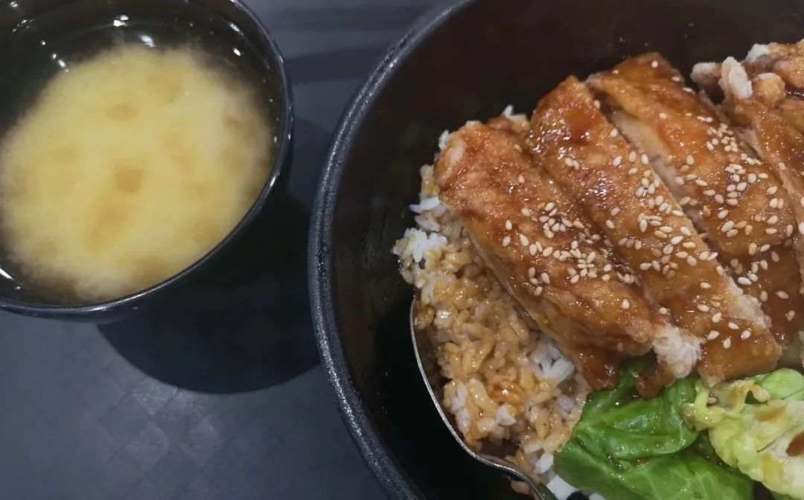

有时候做梦到一半，会开始分析梦里面建筑的结构、以及这么设计的用心。
打开Notepad++，一时间没有想好要写什么。那就下次再说
在食堂要了一杯鳄梨奶昔avocado milkshake，不大的一杯。吃完饭买了在路上喝，得找大叔要跟吸管。大叔说学校环保，没有吸管。直接揭开盖子喝，似乎又不太好。那就打包吧。热爱环保的大叔热心地拿了个塑料袋出来。
学校里边分了区域，意思是没法到其他的区域去。但是你可以出学校。于是我和不同区的朋友约饭都是在校外。谁能想到除了给所有普通人的禁区之外，学校里的其他地方也不能去。
想去办一张银行卡，因为据说在当地用得比较多。我有点事，朋友先去了银行。银行说是疫情期间你们最好在网上办理，这很合理。但是朋友已经到了现场，于是工作人员改为在现场教ta怎么网上办理。然后等五天申请，以及三天分别寄三封纸质的信到邮箱里，合在一起才能激活。
忽然有一天决定去健身房，我提醒伙伴说，前面去的人讲都得带一条毛巾。一开始我以为是自己擦汗。后来想一想应该是把器材擦干净。
因为科研安排，我得去另一个区做实验。但是我还住在原来的区，意味着可以跨区行走了。系里秘书给我发来一封信，翻译过来是：“你这学期以后就不能来系里了，确定噢？除了住在这里，你确定不会以其他借口到原区域噢？”
有一天在食堂吃饭。大概是巡查的人从我们旁边走过去，说了一句中文，但我没有听懂，这令我想起笑川先生。不禁和朋友夸赞：“这个人华语说得好好啊，还可以倒放。”
又有一天在食堂打饭，门口没有人查绿码。用中文买过早餐，想要付款的时候食堂大妈说：“看一下你的约撒谱”我？？？她又复述了一遍，我日剧：“诶？”
上一段里巡查的人走过，说：“uNivUS APP,打开看一下”我才知道，就是那个绿码。看过之后，她问：“是不是我的英文不够标准？”虽然我经常一半英文一半中文地讲话，但有些内容的确是超纲了。
看到以前一起在西小门外回民烧烤，整天跟老板嚎要来瓶大乌苏，的人。这个人现在去了青岛。我们把这总结为降维打击。
去同楼层另一个朋友那里玩，我在走廊的这一头，他在另一头。我望出去是新加坡西海岸和各种舰艏灯塔，他那边直接可以看到市中心更远快到自然保护区的地方。就在我们楼层两边，看两眼，视线范围超过了新加坡一半以上的陆地国境。
以前看过一篇特稿，内容关于央美毕业生，毕业之后去培训机构专门教别人如何考上央美。免不了拿自己做课堂的教学案例“我就是这么考上的央美”诸如此类云云。谈到一些，没有按照一般发展规律走下去，而选择了人少道路的那些人。他们会疯狂想把其他表露相关意向的人疯狂往自己的方向里边引导，并以此来减轻自己的不安。“没事没事，还有人也进来了。”
以前以为博士阶段的麻烦会是：“什么时候才有时间过自己的生活啊？”我以为会忙课题忙到没时间去剧场、没时间去和朋友压马路扫街拍照。
事实上现在的麻烦是：“什么时候才有时间做自己的课题啊？”马斯洛需求层次理论，层次就意味着层次。把课程忙完了，再忙科研；把这些都忙完了，再忙生活。我以为在这一层，但其实到这一层的话事情也没现在这么复杂。我在我想的下一层。所以也没必要。Due越多的时候，才越有表达欲。上周二due最多的时候，和好朋友去吃了一次泰餐。那时候我才觉得，有以前学习状态回归的感觉。
有时候想起中学时代看的那些爽文主角也针不辍。不是因为畜寨山里啦当然。而是因为，每当把这件事做完了的时候，都有下一件什么事情在等着。一件事接着一件事，那么全程走钢丝怎么也好总之按照说法来就行。至少不用多虑其他的事情。
多虑是个很麻烦的事情。多虑意味着往往会带来反面，也就是欠考虑。而当这两者随机出现的时候，很难把握决定的正当性。所以还是该干嘛干嘛比较不聪明，也容易做。
不过我有一位会武术的朋友，有一天聊着聊着就突然给另一位朋友施展了一招葵花点穴手。曾经有人拜托我的最难的忙，大概就是一边笑到打滚，一边拜托好朋友去解穴。
见过迪士尼在逃公主、迪士尼在逃王子、迪士尼在逃清洁工。直到前几天有一位学编导的朋友宣称ta是迪士尼在逃导演/在逃监制，因为ta走了所以《花木兰》才会拍成这个样子。
不你不知道，你只关心今天的鸡肉饭是不是又糖放多了。